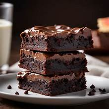

A freshly baked brownie invites your senses with its deep, chocolaty aroma—rich, warm, and slightly bittersweet. The surface glistens with a thin, crackly crust, catching the light like a mosaic of dark cocoa and sugar. As you bring it closer, the scent of melted chocolate and browned butter wraps around you like a velvet blanket. Your fingers sink gently into its soft, slightly dense texture, feeling the contrast between the delicate top and the fudgy center beneath.
The first bite is a luxurious experience. Your teeth break through the fragile crust, then glide into a molten, velvety core that melts slowly across your tongue. Intense cocoa swirls with subtle caramel notes, while pockets of chocolate offer bursts of silky sweetness. The richness lingers, coating your mouth in a warm, decadent embrace with just a whisper of salt to balance the sweetness. Each chew is like a slow, comforting sigh—dense, indulgent, and endlessly satisfying, leaving behind a lingering taste that beckons you for just one more bite.